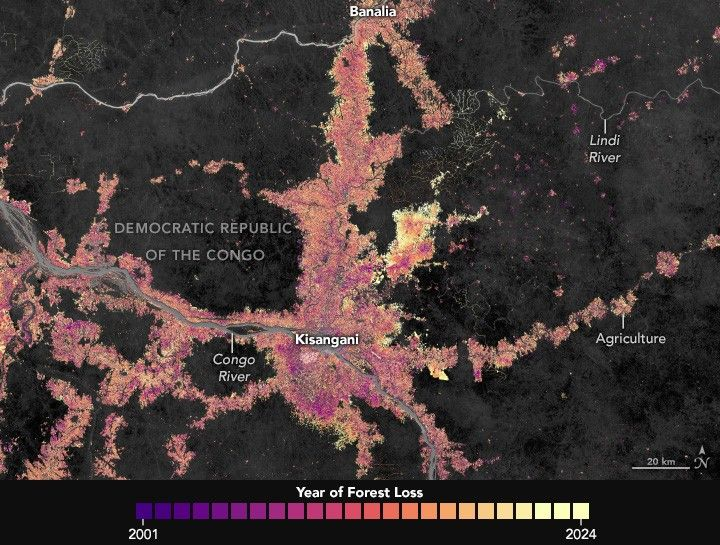

Reshaping the Forests Around Kisangani
The Congo Basin is home to the world’s second-largest tropical rainforest, surpassed only by the Amazon. Spanning six countries and 3.7 million square kilometers—an area larger than India—the Congo rainforest helps sustain 75 million people and tens of thousands of plant and animal species, including gorillas, bonobos, chimpanzees, forest elephants, okapi, and leopards.
However, the basin has seen major changes in recent decades. One analysis published in 2024 found that it had lost more than 8% of its rainforest since 1990. In the Democratic Republic of the Congo (DRC), home to two-thirds of the basin’s rainforest, losses have totaled 74,500 square kilometers (28,800 square miles) since 2002, roughly the size of North Dakota. The group reported more primary forest loss in the DRC in 2024 than in any year on record since 2002.
The forest in Tshopo province around Kisangani—a fast-growing city now home to about 1.5 million people—is one of several areas contributing to the losses. A detailed Global Forest Watch analysis indicates that the province saw more tree cover loss in recent decades than any other part of the DRC, with losses totaling more than 19,000 square kilometers (7,300 square miles) since 2001.
The map above details where forest losses have occurred around Kisangani between 2001 and 2024, with older losses shown in purple and pink and more recent losses in orange and yellow. The map is based on global forest change data from the University of Maryland’s Global Land Analysis and Discovery laboratory, which draws on observations from Landsat satellites. Forest loss indicates the removal or mortality of tree cover and can be due to a variety of factors, including mechanical harvesting, fire, disease, or storm damage. As such, “loss” is not the same as deforestation, a human-caused and more permanent removal of forest cover.
“Long-term satellite observations show a steady conversion of humid and secondary forests around Kisangani into fields and fallows,” said Héritier Koy, a remote sensing researcher at the University of Maryland.
A detailed satellite-based map highlights forest loss near Boliambe in the Democratic Republic of the Congo between 2001 and 2024. Logging roads appear as colorful branching lines extending from cleared areas, while small patches of shifting cultivation around villages are visible to the east. The Lindi River winds across the top of the image. Areas of forest loss are shown in colors from purple (earlier years) to yellow (recent years). Forested areas are dark gray.
According to Koy, small-scale agriculture is the primary driver of forest loss and degradation in the area, although urban energy demand is also important. About 95% of households in Kisangani rely on fuelwood and charcoal, leading to extra harvesting around the city and other large settlements.
The map underscores how transportation networks have influenced where forest losses occur, with fire activity and clearing clustered along rivers, notably the Congo, Tshopo, and Lindi. Belgian colonial authorities established the city near the confluence of these rivers in the 1880s due to their importance for transporting goods. In modern times, roads have become another driver of development, including along National Route 4, which connects Kisangani and Banalia. Villages now line many rivers and roads in Tshopo, with agricultural clearings expanding outward in linear bands to create the caterpillar-shaped patterns of forest loss that dominate the map.
Cultivation of certain commodity crops may have also contributed to forest losses. “Despite awareness-raising and reforestation initiatives, we’ve seen growing numbers of coffee, oil palm, and cacao plantations coming to the area beginning around 2010,” said Janvier Lisingo, an ecologist at the University of Kisangani. “This pressure has continued during the past five years with new concessions, higher energy demands, and new agro-industrial projects.”
The second map, which focuses on relatively intact forests south of the Lindi, reveals forest loss dynamics in more detail. According to Koy, the narrow, rectilinear pattern represents new access roads likely used for industrial logging and fuelwood transport. To the east, the regularly spaced rounded clearings are the hallmark of small settlements practicing shifting cultivation—a farming method characterized by short cycles of clearing and cultivation, followed by periods of fallow, also known as swidden agriculture.
The changes in the rainforests around Kisangani differ from what is often seen in the Amazon or the rainforests of Southeast Asia. “In those regions, large-scale industrial crops, often soybean and oil palm, drive rapid and permanent conversion,” Koy said. “In Tshopo, the main forces are more diffuse and ephemeral because of their association with shifting cultivation.”
In recent decades, research shows that forest losses across the DRC have averaged about 0.2 to 0.3% per year. “These national figures align with what’s visible around Kisangani: gradual but persistent forest loss,” Koy said. “That’s below the global tropical mean but still signals a progressive increase.”